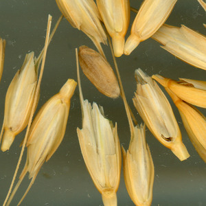
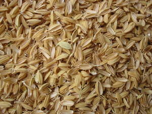

| ⲁⲙⲧⲱϩ S | (noun)clay mixed with chaff (?), used for stopping leaks in canal bank4 | 453b | |||||||
| ⲣⲉϥⲧ. S | chaff-seller2434 | ||||||||
| view | ⲣⲟⲟⲩⲉ, ⲁⲣⲟⲟⲩⲉ, ⲣⲟⲉⲓⲟⲩⲉ S ⲣⲏⲓⲟⲩⲉ Sa ⲣⲉⲓⲟⲩⲉ, ⲁⲣⲉⲓⲟⲩⲉ A ⲣⲱⲟⲩⲓ, ⲁⲣⲱⲟⲩⲓ B ⲗⲁⲟⲩⲓ F | (noun masculine) stubble [καλαμη]1347 |
| view | ⲧⲱϩ SLF ⲧⲱⳉ A ⲧⲱϧ, ⲑⲟϩ B ⲧⲟϩ F ⲧⲉϩ-, ⲧⲁϩ-, ⲧⲱϩ- S ⲑⲉϧ- B ⲧⲁϩ⸗ SF ⲑⲁϧ⸗ B ⲧⲉϩ⸗ F ⲧⲏϩ† SLF ⲧⲏⳉ† A ⲑⲉϩ B ⲧⲉϩ† F | (verb) intr: be mixed, disturbed, clouded [ταρασσεσθαι, συγχεειν]
tr: mix, stir [κεραννυειν, συντριβειν]270 |
| view | ⲧϩⲟ SAB ⲑⲟ S ⲑⲟϩ B | (verb) intr: make, be bad (caus of ϩⲟⲟⲩ) [κακος αποβαινειν, πονηρος ειναι]1680 |